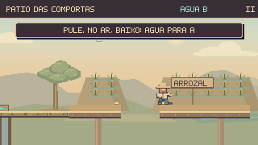
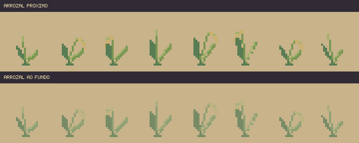

Continuação desta revisão: Tubos, pistões e água em movimento — 16/10.
Guaíra em atividade.
Gestos de trabalho mais contínuos, um inspetor que escreve e acompanha o elevador, arrozais com folhas e espigas variadas. Mais vida nos cenários, na escala de pixels do próprio jogo.
Gestos completos
Preparação, alcance, esforço e retorno com sete poses por ciclo. Botas firmes, piscadas curtas e pequenos detalhes no chapéu e na roupa.
Trabalho ligado à fase
Os dois moradores da Subida usam o mesmo sistema dos demais. O mecânico acompanha a prancha; o inspetor interrompe a escrita para observar o elevador afastado.
Examinar as poses e as mãos · Ver as reações aos mecanismos


O acabamento dentro das fases

ANTESDEPOISFileiras desencontradas, alturas variadas e espigas arqueadas substituem a repetição das mesmas folhas em V.

Os percursos com a arte nova
Entradas de teclado gravadas, física e câmera nativas. Simulação a 60 Hz, captura a 15 quadros por segundo. O vídeo dos trabalhadores acima usa poses de inspeção.
Conferência desta rodada
883 testes de Guaíra e build aprovados. 56 enquadramentos conferidos e quatro percursos completos sem dano. No navegador, as oito fases passaram por entrada, teclado, pausa estável e retorno ao mapa.
Cenários e percursos · Sprites e animação · Navegador · Registro técnico